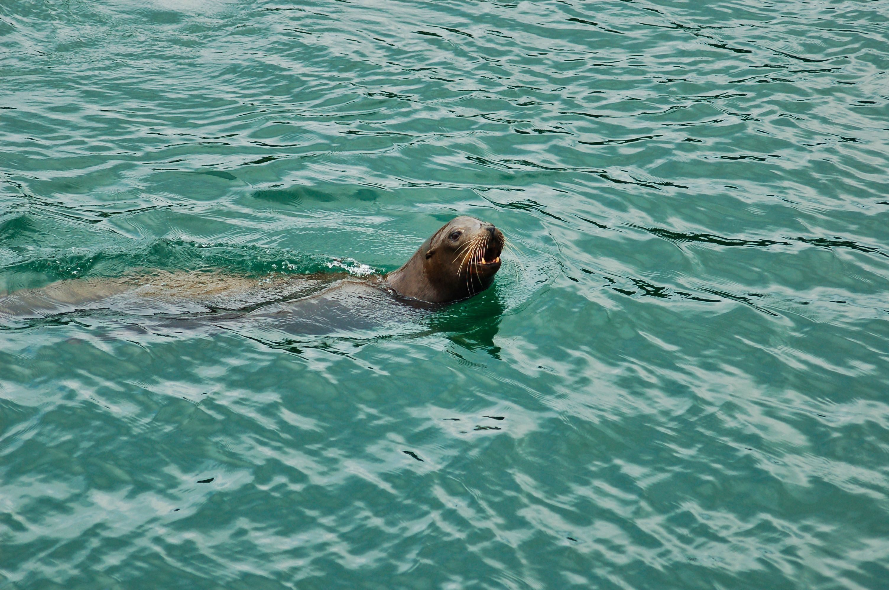

Mis Tres Animales Favoritos
Tres hábitats distintos: el hogar, la selva y el océano.

Canino Doméstico Escocia
Golden Retriever
Famosos por su pelaje dorado, carácter amigable y extraordinaria facilidad para el adiestramiento y asistencia.

Felino Salvaje Asia
Tigre (Panthera tigris)
Depredador ápice con un patrón de rayas único en cada individuo, como una huella dactilar humana.

Mamífero Marino Costas del Pacífico
León Marino
Pinnípedos ágiles capaces de caminar en tierra gracias a sus aletas rotatorias y nadar a gran velocidad.